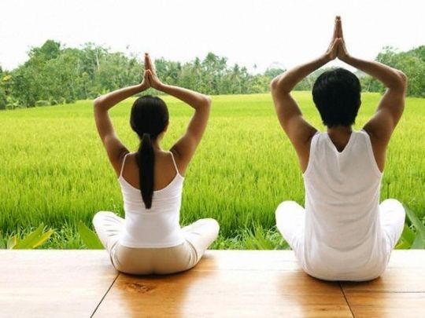

YOGA
Masih belum yakin dengan manfaat yoga? Percayalah bahwa yoga membantu Anda, berikut 15 manfaat dari yoga :

- Lebih Fleksibel
- Lebih Kuat
- Memperbaiki postur
- Melindungi persendian dari rematik dan artritis
- Melindungi tulang punggung
- Mencegah osteoporosis
- Melancarkan peredaran darah
- Membersihkan limfa
- Melindungi jantung
- Menurunkan tekanan darah
- Menjaga memori
- Mendatangkan kebahagiaan
- Menurunkan berat badan
- Menurunkan gula darah dan kolesterol jahat
- Meningkatkan kecerdasan
Manfaat ini yang paling langsung terasa. Mungkin di awal latihan Anda belum mampu menyentuh ibu jari kaki saat melakukan gerakan backbend. Namun, jika terus berlatih, tubuh secara perlahan mulai terasa lebih fleksibel dan Anda akhirnya bisa menyentuh jempol kaki. Anda juga bakal mendapati nyeri dan pegal-pegal hilang
Otot yang kuat bikin Anda terlihat lebih menarik. Otot juga menjaga tubuh kita dari penyakit seperti artritis dan nyeri punggung serta mudah terjatuh pada lansia. Membangun kekuatan lewat yoga, Anda menyeimbangkannya dengan fleksibilitas.
Tahukah Anda, kepala kita seperti bola boling yang besar dan berat? Butuh keseimbangan bagi tulang punggung dan otot-otot punggung untuk menyangganya. Bukan mustahil jika Anda merasa kelelahan. Masalahnya ada pada postur yang buruk. Yoga bisa memperbaiki postur dan mencegah nyeri, kelelahan, dan juga artritis gara-gara postur yang buruk.
Setiap kali beryoga, Anda melatih persendian bergerak dalam jangkauan penuh. Ini berarti Anda mencegah penyakit artritis degeneratif dengan “memeras dan merendam” daerah kartilage yang jarang digunakan. Kartilage seperti spons yang menyerap nutrisi hanya ketika cairan dikeluarkan. Tanpa latthan, jaringan itu akan lapuk dan meninggalkan tulang tanpa bantalan.
Ruas-ruas tulang belakang sebagai peredam kejut antartulang belakang juga butuh dilatih. Jika rajin berlatih backbend, forward bend, dan twist, Anda menjaga ruas-ruas tulang belakang jadi lebih fleksibel.
Sudah banyak penelitian membuktikan bahwa latihan beban memperkuat tulang dan menghalau osteoporosis. Banyak postur yoga yang mengharuskan Anda mengangkat beban tubuh sendiri. Pose downward atau upward facing dog membantu menguatkan tulang lengan yang rentan kena osteoporosis. Yoga juga baik meningkatkan kepadatan tulang belakang.
Yoga melatih Anda rileks. Latihan rileksasi itu membantu sirkulasi darah, khususnya di tangan dan kaki. Yoga juga membantu oksigen untuk masuk ke dalam sel. Pose twist baik untuk membawa darah ke organ-organ dalam dan mengalirkan ke luar setelah pose itu selesai. Pose headstand, handstand, dan shoulderstand membantu membawa darah dari kaki dan panggul ke jantung dan dari situ dipompa ke paru-paru, sehingga mendapat oksigen segar. Yoga juga meningkatkan kadar hemoglobin dan sel darah merah yang membawa oksigen ke jaringan.
Ketika berkontraksi dan meregangkan otot, menggerakkan organ-organ, Anda meningkatkan pembersihan limfa, cairan yang kaya akan sel kekebalan tubuh. Ini akan membantu sistem limfatik memerangi infeksi, merusak sel-sel kanker, membuang racun-racun dari produksi fungsi selular.
Olahraga aerobik bagus untuk melindungi jantung. Meskipun bukan termasuk aerobik, jika melakukan yoga, Anda meningkatkan detak jantung sampai ke tingkat aerobik. Walaupun yoga tidak meningkatkan detak jantung yang dapat memperbaiki fungsi kardiovaskular, penelitian menemukan bahwa latihan yoga menurunkan tingkat jantung istirahat, meningkatkan stamina, dan memperbaiki asupan oksigen maksimum ketika olahraga. Ini nilainya sama dengan olahraga aerobik.
Ada baiknya Anda mencoba yoga jika menderita hipertensi. Dua penelitian hipertensi dari jurnal medis Inggris The Lancet, membandingkan efek pose savasana dengan hanya berbaring di sofa. Setelah tiga bulan savasana disebut menurunkan tekanan darah sistolik sebanyak 26 poin dan 15 poin pada tekanan diastolik.
Yoga menurunkan kadar hormon kortisol. Normalnya kelenjar adrenalin mengeluarkan kortisol sebagai respon pada keadaan krisis akut yang kemudian secara temporer mendorong fungsi kekebalan. Jika kadar kortisol tetap tinggi setelah krisis berlalu, itu dapat menggerogoti kekebalan tubuh. Peningkatan kortisol temporer memang membantu memori jangka panjang. Namun, jika terus-menerus, kortisol tinggi mengganggu memori dan menyebabkan perubahan permanen pada otak. Kelebihan kortisol itu terkait dengan depresi, osteoporosis, tekanan darah tinggi, dan resistensi insulin.
Penelitian membuktikan bahwa latihan yoga konsisten memperbaiki depresi, meningkatkan kadar serotonin, dan menurunkan kortisol. Richard Davidson dari University of Wisconsin, AS, menemukan bahwa kortek prefrontal kiri terlihat meninggi pada orang yang bermeditasi. Penemuan itu mengorelasikan kadar kebahagiaan yang lebih tinggi dan fungsi kekebalan tubuh yang lebih baik. Kadar lebih tinggi ditemukan pada pencinta yoga yang sudah bertahun-tahun berlatih
Jangan malas bergerak dan jangan rakus. Begitulah sebenarnya prinsip menjaga berat badan sehat. Yoga dapat membantu kita melakukan kedua prinsip itu. Latihan yoga membantu Anda bergerak dan membakar kalori. Sisi spiritual dan emosi yoga mendorong Anda untuk melihat masalah makan dan berat badan lebih dalam. Mungkin yoga akan memberi inspirasi Anda untuk menjadi orang yang lebih sadar saat makan.
Yoga menurunkan gula darah dan kolesterol jahat, sekaligus menaikkan kolesterol baik. Pada diabetesi, yoga membantu mengontrol gula darah dengan menurunkan kortisol dan kadar hormon adrenalin, menurunkan berat badan, dan memperbaiki sensitivitas pada insulin.
Satu komponen penting yoga adalah fokus pada keadaan sekarang. Penelitian menemukan bahwa latihan yoga teratur memperbaiki koordinasi, reaksi, memori, dan bahkan nilai IQ. Orang yang berlatih meditasi transendental mampu memecahkan masalah, mengolah informasi lebih baik karena mampu berkonsentrasi, dan tak mudah terganggu masalah lain.